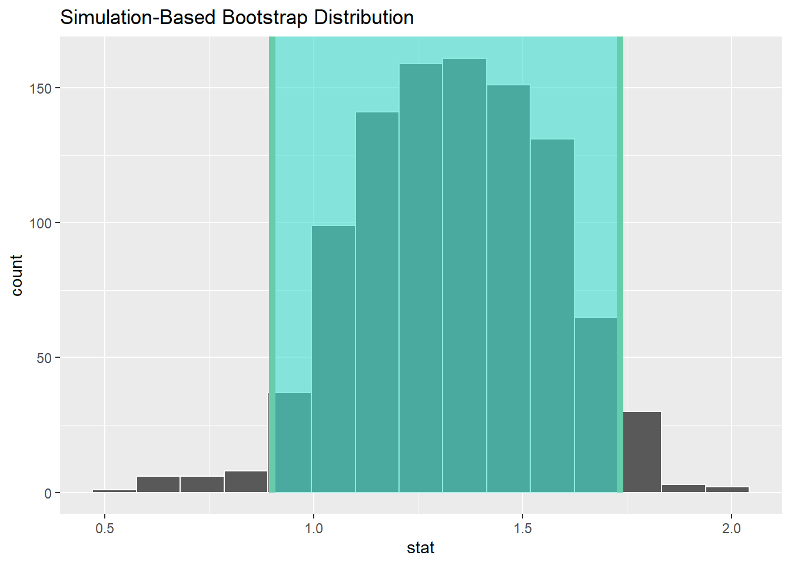

Chapter 7 T-Tests for Means
We can also use bootstrapping as an entry point to a new analysis situation, where we are comparing two groups. This could be for example in a classic experimental context; treatment and control.
So, let’s load up our Ed Sheeran study data:
## # A tibble: 6 × 3
## ID GROUP ANGER
## <dbl> <dbl> <dbl>
## 1 1 1 4
## 2 2 2 5
## 3 3 1 2
## 4 4 2 3
## 5 5 2 4
## 6 6 1 2| Name | ED_IND |
| Number of rows | 30 |
| Number of columns | 3 |
| _______________________ | |
| Column type frequency: | |
| numeric | 3 |
| ________________________ | |
| Group variables | None |
Variable type: numeric
| skim_variable | n_missing | complete_rate | mean | sd | p0 | p25 | p50 | p75 | p100 | hist |
|---|---|---|---|---|---|---|---|---|---|---|
| ID | 0 | 1 | 15.50 | 8.80 | 1 | 8.25 | 15.5 | 22.75 | 30 | ▇▇▇▇▇ |
| GROUP | 0 | 1 | 1.50 | 0.51 | 1 | 1.00 | 1.5 | 2.00 | 2 | ▇▁▁▁▇ |
| ANGER | 0 | 1 | 3.33 | 1.21 | 1 | 2.00 | 3.0 | 4.00 | 5 | ▁▇▇▆▇ |
We need to tell R that GROUP is a factor variable not a numeric one:
Check it worked:
| Name | ED_IND |
| Number of rows | 30 |
| Number of columns | 3 |
| _______________________ | |
| Column type frequency: | |
| factor | 1 |
| numeric | 2 |
| ________________________ | |
| Group variables | None |
Variable type: factor
| skim_variable | n_missing | complete_rate | ordered | n_unique | top_counts |
|---|---|---|---|---|---|
| GROUP | 0 | 1 | FALSE | 2 | 1: 15, 2: 15 |
Variable type: numeric
| skim_variable | n_missing | complete_rate | mean | sd | p0 | p25 | p50 | p75 | p100 | hist |
|---|---|---|---|---|---|---|---|---|---|---|
| ID | 0 | 1 | 15.50 | 8.80 | 1 | 8.25 | 15.5 | 22.75 | 30 | ▇▇▇▇▇ |
| ANGER | 0 | 1 | 3.33 | 1.21 | 1 | 2.00 | 3.0 | 4.00 | 5 | ▁▇▇▆▇ |
Let’s run an independent samples T-Test with bootstrapped confidence interval using Infer.
We use an independent samples test, as the theory is these two groups are sampled from independent populations (those who listened to Ed Sheeran, and those who did not) and what we are doing is trying to work out whether there is any difference in anger between them…
## # A tibble: 2 × 2
## GROUP name
## <fct> <dbl>
## 1 1 2.8
## 2 2 3.87
## Response: ANGER (numeric)
## Explanatory: GROUP (factor)
## # A tibble: 1 × 1
## stat
## <dbl>
## 1 -2.65## # A tibble: 1 × 2
## lower_ci upper_ci
## <dbl> <dbl>
## 1 -5.49 -0.575Remember: Group 1 is the control, and Group 2 listened to Ed Sheeran
Cool so it seems that Group 2 displayed more anger. The Confidence interval for the t-statistic does not contain 0, so it supports the idea that there is a difference here. It is quite wide though - because of our small sample size.
OK, so let’s use a different design, using a paired samples t-test.
7.1 Back to the slides…
The same basic process is needed, but with some modifications because of the type of comparison we are doing.
First, we read the data in as normal, and make sure it is treated as a data frame.
## ID ANG_T1 ANG_T2
## 1 1 1 4
## 2 2 2 5
## 3 3 3 2
## 4 4 4 3
## 5 5 2 4
## 6 6 1 2Now, for this bootstrap purpose we actually need to to create a new column which is the difference between the two measurements (here, T1 and T2).
Then, we bootstrap a one-sample t-test with this new column
Let us do this:
Create new difference column:
## ID ANG_T1 ANG_T2 DIF
## 1 1 1 4 3
## 2 2 2 5 3
## 3 3 3 2 -1
## 4 4 4 3 -1
## 5 5 2 4 2
## 6 6 1 2 1Method 1: we use Infer to bootstrap a CI for the mean of the difference variable, to see whether it includes zero:

## Response: DIF (numeric)
## # A tibble: 1 × 1
## stat
## <dbl>
## 1 1.33## # A tibble: 1 × 2
## lower_ci upper_ci
## <dbl> <dbl>
## 1 0.9 1.73## [1] 2## [1] 3.333333Method 2: We use a variant of this code to run a 1-sample t-test on the difference variable, testing whether it is different from zero. To do this we need to add some code specifying a comparison with zero:

## # A tibble: 1 × 1
## p_value
## <dbl>
## 1 0## Response: DIF (numeric)
## # A tibble: 1 × 1
## stat
## <dbl>
## 1 1.33## [1] 2## [1] 3.333333Marvelous. We can see that, with both ways of looking at this test, the results suggest that after listening to Ed Sheeran, our sample on average reported more anger
1: Because the 95% confidence interval does not include 0, I am confident in saying that there is some effect going on here.
2: Because the bootstrapped probability (as expressed by the p-value) of observing the mean difference in anger between T1 and T2 of 1.33 is very low (0 in our results, but the true value will not be exactly zero), I am confident in saying there is an effect here.
Not surprised…